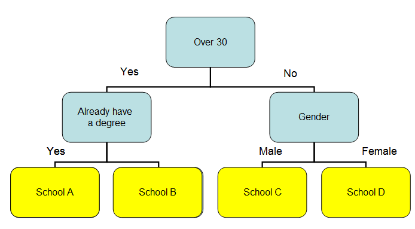

Decision Tree Classifier
What are Decision Tree Classifiers
Decision Tree Classifiers are a class of algorithms that use prior data as a way for it to "learn" how to predict future data. It is relatively simple to implement, but fairly effective.
Decision Trees are built very simply, it starts by taking all the data and trying to find which attribute will split the data evenly. Each node in the tree is a question where each answer possible for that question then gets branched off to a new node. Then for each of those branches it repeats this until either it can't split them anymore or it hits an ending condition such as the node only had x-number of values in it or all of the nodes values in it are one class. This tree of rules is then used for future data so that an un-classified piece of data can be compared to the rules. It starts with the first rule, called the root of the tree, then follows a path down to a leaf node based upon the rules.
An example would be if you have data on a bunch of people from some schools. You know everyones age, sex and if they have graduated already. You find that everyone over 30 only goes to schools A and B while people under 30 go to schools C and D. Then if they are under thirty if they are males they go to school C while if they are females they go to school D. Then if they are over 30 if they alredy have their degree they go to school A otherwise the go to school B.
From this you would build a decision tree where the root node is their age. If it is under thirty the node would be what's their gender. If over 30 it would be if they already have a degree. An illustration of what this would look like is below:

About the implementation:
The following code is an example from the book Collective Intelligence. It shows an example of how to build a decision tree where each node is only split once so as to limit the number of children to two. It then returns this tree which can then be used to classify un-classified data.
def buildtree(rows,scoref=entropy):
if len(rows)==0: return decisionnode( )
current_score=scoref(rows)
# Set up some variables to track the best criteria
best_gain=0.0
best_criteria=None
best_sets=None
column_count=len(rows[0])-1
for col in range(0,column_count):
# Generate the list of different values in
# this column
column_values={}
for row in rows:
column_values[row[col]]=1
# Now try dividing the rows up for each value
# in this column
for value in column_values.keys( ):
(set1,set2)=divideset(rows,col,value)
# Information gain
p=float(len(set1))/len(rows)
gain=current_score-p*scoref(set1)-(1-p)*scoref(set2)
if gain>best_gain and len(set1)>0 and len(set2)>0:
best_gain=gain
best_criteria=(col,value)
best_sets=(set1,set2)
# Create the subbranches
if best_gain>0:
trueBranch=buildtree(best_sets[0])
falseBranch=buildtree(best_sets[1])
return decisionnode(col=best_criteria[0],value=best_criteria[1], tb=trueBranch,fb=falseBranch)
else:
return decisionnode(results=uniquecounts(rows))